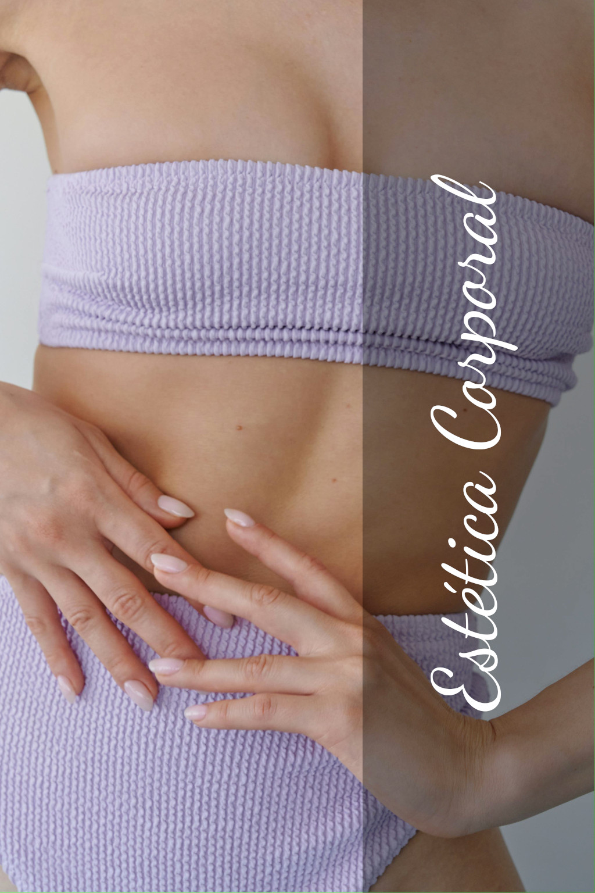
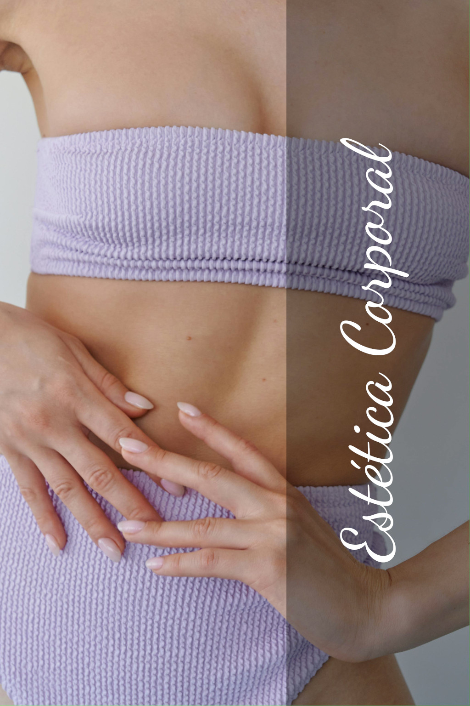

Drenagem Linfática:
Auxiliar na eliminação de líquidos e toxinas do corpo, reduzir inchaços, melhorar a circulação e fortalecer o sistema imunológico.
Beneficios:
- Reduz inchaços: Elimina líquidos acumulados e alivia a retenção.
- Melhora a circulação: Favorece o fluxo sanguíneo e linfático.
- Remove toxinas: Auxilia na desintoxicação do corpo.
- Acelera a recuperação: Ajuda na cicatrização e no pós-cirúrgico.
Limpeza de Pele:
Procedimento que visa higienizar profundamente a cútis, removendo impurezas, cravos (comedões) e células mortas.
Beneficios:
- Remove impurezas: Desobstrui poros e previne cravos e espinhas.
- Renova a pele: Esfolia e deixa a pele mais radiante e uniforme.
- Prepara para tratamentos: Melhora a absorção dos ativos.
- Melhora a textura: Deixa a pele mais saudável e hidratada.
Massagem Anti-Estresse:
A massagem anti-estresse é uma técnica suave e lenta que atua em áreas como pescoço, ombros, costas e pernas, ajudando a aliviar a tensão e o estresse acumulados.
Beneficios:
- Reduz estresse e ansiedade: Diminui o cortisol e aumenta serotonina e endorfina.
- Melhora a circulação: Estimula o fluxo sanguíneo e elimina toxinas.
- Alivia dores musculares: Reduz tensões e melhora a mobilidade.
- Melhora o sono: Favorece um descanso profundo e reparador.
Depilação:
Por hábito, é feito em certas regiões corporais que, por motivos estéticos, sociais ou higiénicos, se pretendem manter sem pelo.
Beneficios:
- Pele mais lisa: Toque suave e delicado, diferente da lâmina.
- Remoção pela raiz: Enfraquece folículos e prolonga o intervalo entre depilações.
- Previne irritações: Evita inflamações causadas pelo atrito dos pelos.
- Melhora a autoestima: Sensação de pele bem cuidada aumenta a confiança.
Design de Sombrancelha:
Procedimento que envolve a modelagem das sobrancelhas, levando em consideração o formato do rosto, a personalidade e as características individuais de cada pessoa.
Beneficios:
- Harmonização facial: Melhora o equilíbrio e a simetria do rosto.
- Expressividade: Realça a luminosidade e o olhar.
- Correção de imperfeições: Corrige falhas nos pelos e cobre cicatrizes.
- Autoestima: Aumenta a confiança e a sensação de beleza.
-
Sobre:
A Sol e Bem-Estar é uma empresa de pequeno porte especializada em levar autoestima e bem-estar a mulheres de todas as diversidades. Atuando como prestadora de serviços estéticos, atendendo na Zona Norte de São Paulo — oferecendo praticidade, cuidado e qualidade em cada atendimento.
-
Endereço:
-